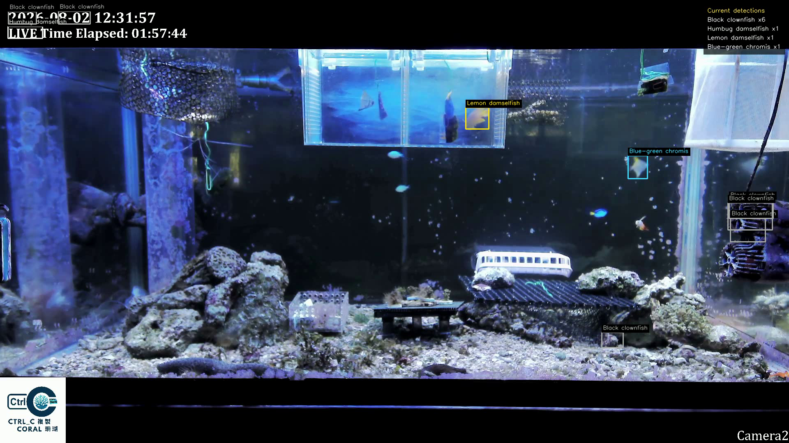
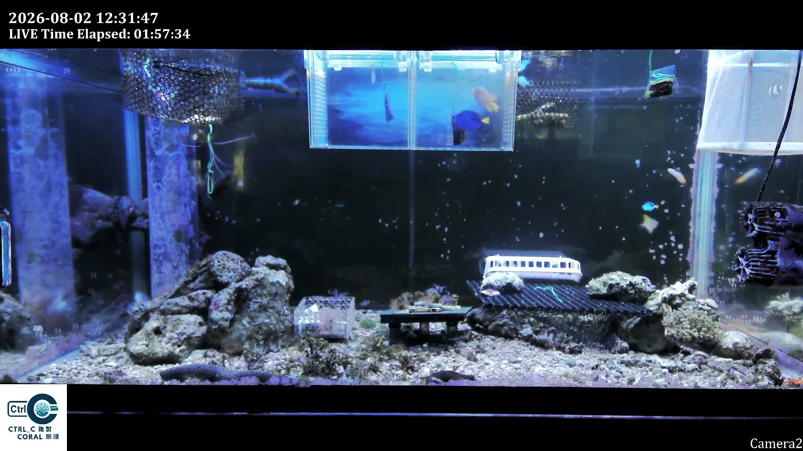
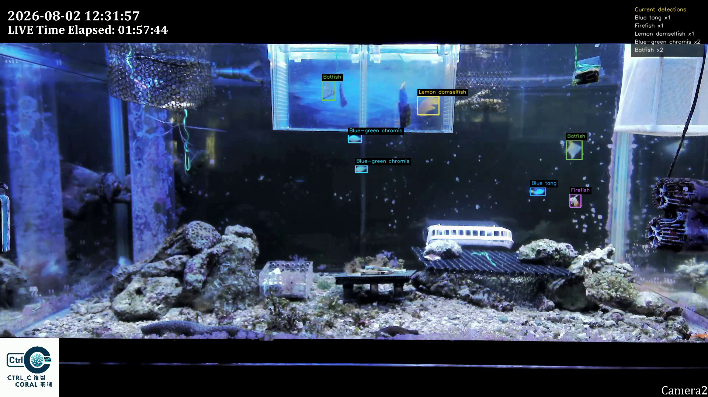
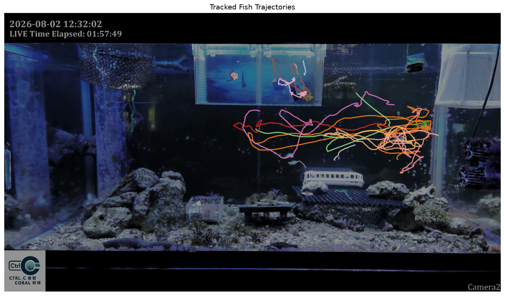
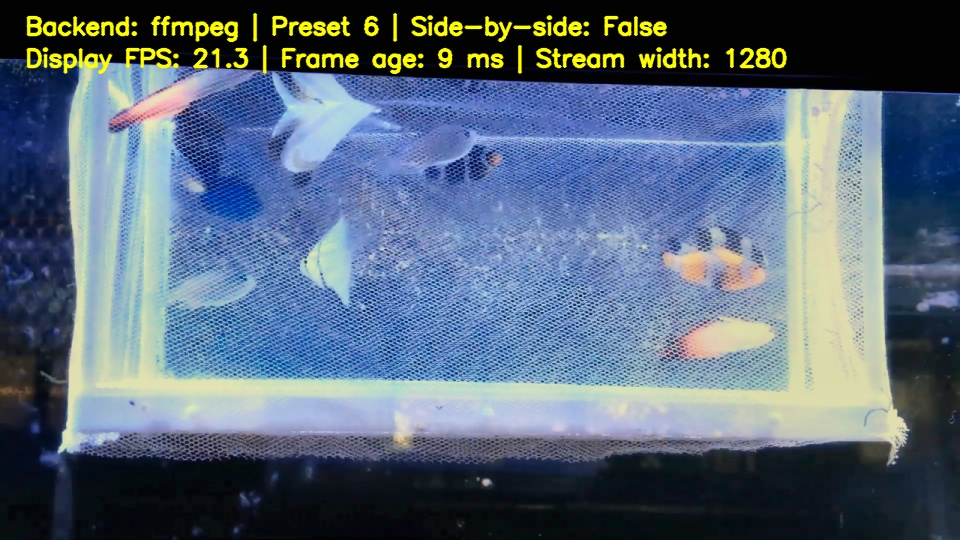
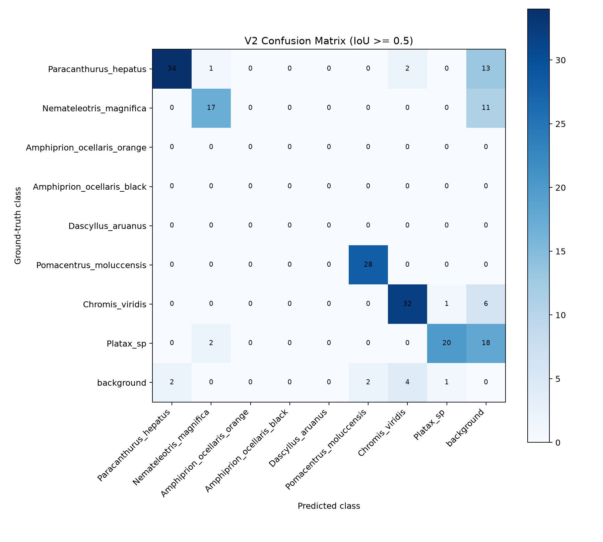

AI / Research · Engineering case study
The real test
was deployment.
An underwater fish-detection project that grew from learning YOLO workflows into an independent aquarium monitoring system.
01 Learning the workflow
Annotation
before automation.
During summer 2026, I worked and learned at National Yang Ming Chiao Tung University’s Adaptive Photonics Laboratory in Tainan. Day-to-day technical guidance came mainly from a senior lab member.
I practiced bounding-box annotation, class mapping, train-validation preparation, and YOLO model training with underwater and field fish imagery associated with marine research and NMMBA-related data.
- Classes
- 10 fish classes
- Original
- 1,292 annotated images
- Cleaned
- 1,104 valid images
- Split
- 80% training / 20% validation
Pipes · reflections
equipment · structure
Pipeline schematic · not a model output
02 Independent school-tank project
New scene.
New dataset.
I built an independent dataset for the school coral tank, with 8 classes, 419 images, and approximately 5,100 bounding boxes. This was separate from the 10-class lab workflow.
The first model worked relatively well with controlled images. Testing full-tank footage and live camera feeds exposed a much harder deployment environment.
- Fish classes
- 8
- Images
- 419
- Bounding boxes
- ~5,100
03 Failure → refinement
Backgrounds became
false positives.
Pipes, equipment, reflections, and background structures were repeatedly mistaken for fish. The issue was a domain shift between the controlled data and the full-tank scene.
I added 60 manually labeled full-tank images: 48 for adaptation training and 12 for validation. Fish were labeled; pipes, equipment, and other background remained unlabeled as hard-negative context. These were not empty, fish-free images.
04 Final frozen validation / v2
Separate training
from the test.
I manually annotated and audited 60 frames from the final full-tank recording, then froze all 428 ground-truth boxes before evaluating either model. These final v2 results replace the earlier 30-frame evaluation as the current headline metrics. The demo footage below is retained as an archive, not the final test.
- Precision
- 74.10%
- Recall
- 52.80%
- mAP@50
- 58.20%
F1: 61.66% · mAP@50:95: 30.34% · TP 226 / FP 79 / FN 202
Evaluation protocol and scope
Both models used the same frozen images and labels, image size 960, confidence 0.35, and class-aware one-to-one matching at IoU 0.50. The separate AP calculation used a confidence floor of 0.001 and the project's verified 101-point evaluator. mAP averages cover the six classes with positive ground truth; the two absent classes have no estimated AP, but their detections still count as false positives. These 60 validation frames are separate from the 60 adaptation images used in training and validation.
On this same final test, v1 precision was 9.39%, recall 6.78%, and mAP@50 7.33%. False positives fell from 280 to 79 with v2, a 71.79% reduction. This is a within-test comparison, not a comparison against the older 30-frame results.
05 Tracking & live testing
Detection is
not the endpoint.
I added ByteTrack and continue long-duration, live, and livestream processing tests. The intended direction is real-time fish identification and an interactive educational display, with possible future reef and environmental-monitoring applications.
This remains an engineering and deployment project in development, not a publication or a validated reef-monitoring product.
Live deployment testing ongoing06 Connecting perception to action
Seeing is one part.
Acting is another.
At NYCU, I also saw a pineapple-harvesting robotic arm. It made the connection between computer vision and mechanical action more tangible: identifying an object is different from reliably interacting with it.
Explore the mobile robot platform ↗07 Project media / Real evidence
Inside the tank.
The raw, v1, and v2 images share source timestamp 00:10. They illustrate deployment behavior, not the independent evaluation. Technical images open at full size.






Video description and historical labels
0:00–0:15: raw aquarium scene. 0:15–0:30: v1 detections. 0:30–0:51: matched v1/v2 split-screen. 0:51–1:03: the separate frozen 30-frame test results. 1:03–1:11: next steps. There is no audio. These earlier test figures have been superseded by the final 60-frame validation above; the original video is unchanged. The historical “AP50” label refers to mAP@50, and historical Batfish labels remain in the footage. This archived demonstration is not the final evaluation or a live service.